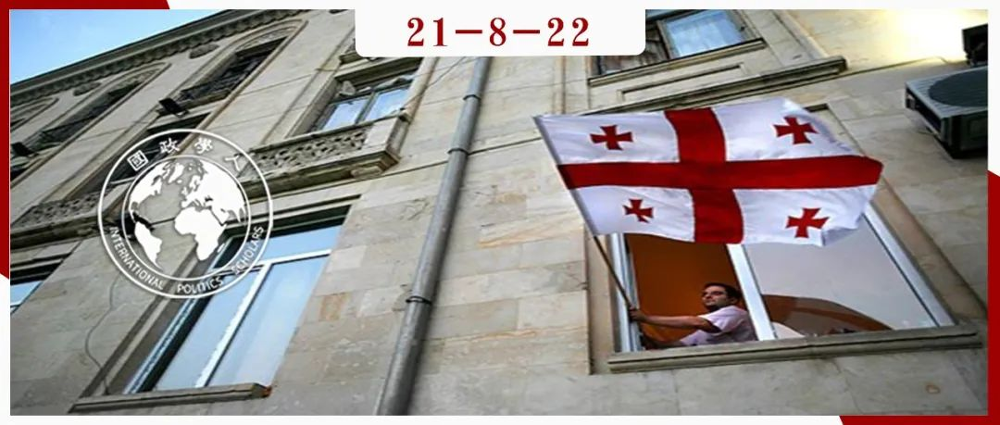
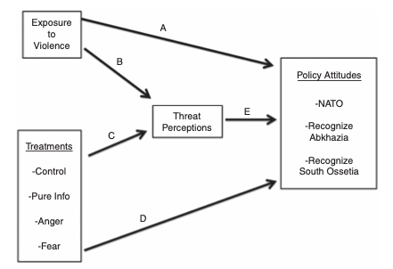
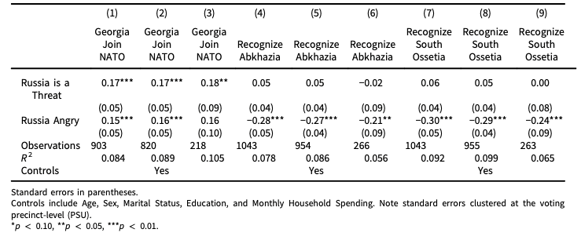

收录于合集 #冲突研究 1个

作品简介
作者： Alexander Kupatadze，伦敦大学国王学院俄罗斯研究所、欧洲与国际问题研究所讲师；Thomas Zeitzoff，美利坚大学公共事务学院副教授。
编译： 杨稚珉（国政学人编译员，上海外国语大学）
来源： Kupatadze, Alexander, and Thomas Zeitzoff. “In the shadow of conflict: how emotions, threat perceptions and victimization influence foreign policy attitudes.” British Journal of Political Science 51 , no. 1 (2021): 181-202.
归档： 《国际关系前沿》2021年第8期，总第35期。

内容提要
本文通过在格鲁吉亚进行的一项调查研究了情绪、威胁感知和受害行为如何影响外交政策态度。作者将受访者随机分配，接受有关俄罗斯在该地区活动的情绪刺激，通过研究在不同地区冲突和国内流离失所者（internally displaced persons, 后简称IDP）的不同暴露程度的分层样本，发现接触暴力或仅仅被俄罗斯过去的侵略行为所刺激，都会增加受访者对来自俄罗斯的威胁感，并在较小程度上增加对俄罗斯的愤怒，更支持强硬的外交政策。而相反的是，作者发现接触暴力不会直接影响外交政策态度，而是通过增加愤怒和威胁间接增加强硬态度。综上所述，作者的研究提供了证据证明回忆过去的暴力事件与直接接触暴力事件对外交政策态度的影响是不同的。
文章导读
01
导论
情绪、威胁感知和受害过程是如何影响外交政策态度的？在冲突中最突出的影响之一就是伴随遭受暴力而来的心理和情感影响。已有充足的证据表明战时暴力所增加的创伤和压力会产生持久的影响，而且不会随着敌对行动停止而结束。此外，还有研究表明这种暴力和政治冲突会产生代际影响，同时也会改变个人对政治的看法。对公义的态度和对和解的接受程度都会受到冲突期间的经验影响。
自从1991年独立以来，格鲁吉亚就南奥塞梯和阿布哈兹的分离领土问题，与俄罗斯以及俄罗斯所支持的分离主义势力已经发生了一系列冲突。格鲁吉亚的决策者和公众被迫在两种情绪中寻求平衡——希望俄罗斯能修正以往侵略行为的愿望和当下俄罗斯更加强大的军事实力所带来的威胁。过去的受害经历、当前感知到的威胁以及由此产生的情绪构成了格鲁吉亚外交政策态度的一个重要方面。选择格鲁吉亚作为研究不同的情绪与暴力经历对外交政策态度影响的案例理由有三：一是由于格鲁吉亚已经面对多次暴力事件，其外交政策和安全问题较为突出；二是在格鲁吉亚对暴力和威胁的认知存在较大的地理和个体差异；三是与俄罗斯相比，格鲁吉亚的军事力量要弱得多，因此格鲁吉亚人必须权衡他们对实行强硬外交政策的渴望与激怒俄罗斯的可能。
过去的研究集中在两个现象上：一是接触暴力所带来的影响；二是情绪如何影响政治行为。接触暴力可以增加政治参与及个人的利他主义倾向，同时也会使政治态度更加强硬。在冲突的背景下，情绪对激励和塑造政治态度与行为方面卓有成效，威胁感知和愤怒将使群体对外产生消极情绪。
在这些研究基础之上，本文致力于研究在冲突的阴影之下，是什么影响了政治态度？为了回答这个问题，作者将过去直接受到暴力行为的影响与从过去到未来所存在的威胁分离进行研究。作者在调查实验中，将受访者随机分为四组：1.完全控制条件的对照组（控制对照组）；2.向受访者预先介绍了俄罗斯在该地区过去和现在的侵略行为（纯信息处理）；3.预先介绍俄罗斯在该地区的侵略行为以引起人们对其行为的愤怒（愤怒处理）；4. 预先介绍俄罗斯在该地区的侵略行为以引起人们对其行为的恐惧（恐惧处理）。在经过这些信息处理后，受访者将会回答一系列有关他们对俄罗斯在该地区行动的威胁程度与愤怒程度认知，对格鲁吉亚加入北约的支持程度，以及是否愿意承认独立的南奥塞梯和阿布哈兹以缓解与俄罗斯的关系。
调查的结果是任何有关俄罗斯侵略信息的提示（不论是恐惧、愤怒或纯信息接受）都会让格鲁吉亚人认为俄罗斯更具威胁性，并增加他们的愤怒程度，同时导致受访者支持强硬的外交政策。此外，国内流离失所者和曾经接触过暴力行为的人更可能将俄罗斯视为威胁，对俄罗斯在该地区的行动更加愤怒。
中介分析（mediation）的证据表明接触暴力对政策态度（格鲁吉亚加入北约、阿布哈兹或南奥塞梯独立）的影响是间接的，并会通过威胁和愤怒情绪调解。作者的研究还进一步提供了证据证明回忆过去的暴力事件与直接接触暴力事件对外交政策态度的影响是不同的，即使像格鲁吉亚在面对更加强大的俄罗斯，对遭受暴力过程的记忆也会成为更激进外交政策的催化剂，从而变成持续冲突的机制。
02
方案设计与数据来源
过去的暴力行为遗产会对当下的政策态度产生严重影响，这是冲突学者的一个重要发现。情绪越来越被认为是塑造政治态度和激发种族冲突的强大因素，领导人和政治家们也会战略性地利用情感来为他们的政策博取支持。在群体间冲突和威胁的背景下，战略地使用情感发挥着更大的作用。理解冲突的两种核心情绪是愤怒和恐惧。愤怒是一种以行动为导向的情绪，它降低了风险和威胁感知，并增加了采取行动来中和愤怒感的倾向。相反，恐惧则会增加对风险和威胁的感知，并导致受访者回避造成恐惧的原因。
先前研究表明威胁感知是一个重要的机制，将接触暴力和情绪与外交政策态度联系起来。最重要的是，预设的恐惧和愤怒对威胁感知有显著的影响。因此，作者在文章中检验了这一理论的以下三点：1.将恐惧处理、纯信息处理和控制对照组进行比较，对过去的暴力行为进行恐惧处理是否会诱发不同水平的威胁感知？2.这些情绪处理后的效果与接触暴力的效果不同吗？3.情绪处理和接触暴力行为对威胁感知有何影响？以及这些威胁感知在支持激进外交政策时又有怎样的差异？

如图所示，为作者提出的假设因果链。文章首先检验了对俄罗斯的威胁感知与外交政策态度之间是否存在关联（即路径E）；其次，作者测试了接触暴力与对俄罗斯过去行为的不同处理是否会影响受访者对俄罗斯的威胁感知（即路径B和C）；接着测试了四种处理方式和接触暴力对政策态度的影响（即路径A和D）；最后作者通过中介分析将预设处理和接触暴力各自能传导多少威胁感知进行拆分研究（从B到E、从C到E）。
基于以上因果关系，本文提出以下假设：
**
**
假设1： 那些遭受暴力程度高的人对来自俄罗斯的威胁有更高感知。
假设2： 那些遭受更严重暴力的国家将倾向于对俄罗斯采取强硬的外交政策（更倾向于加入北约），并对南奥塞梯和阿布哈兹采取更强硬的方针。
假设3： 有关俄罗斯行为的提示和愤怒处理与其他的处理方式会有不同的效果（恐惧处理、纯信息处理以及控制对照组）
假设3A： 与恐惧处理、纯信息处理和控制对照组相比，接受愤怒处理的人对俄罗斯的威胁感知较低。
假设3B： 与恐惧处理、纯信息处理和控制对照组相比，接受愤怒处理的人更倾向于对俄罗斯采取强硬外交政策，对阿布哈兹和南奥塞梯的独立也不太愿意承认。
关于实验对象的选择，作者团队在格鲁吉亚的三个区域进行取样：一是第比利斯，为首都和最大的城市；二是库塔伊西，是格鲁吉亚第三大城市及议会所在地；三是在2008年收到俄格战争所影响的地区。
03
主要结果与分析
1. 情感与态度间关系

如表所示为不同情绪对不同政策的反应。先前的研究提出威胁感和情绪，特别是愤怒情绪，是对外交政策态度的强大驱动因素。从表中也可看到，愤怒情绪（Russia Angry）与威胁感知（Russia is a Threat）与支持格鲁吉亚加入北约有较强的正相关关系。但涉及对南奥塞梯和阿布哈兹独立的态度时（第4、9栏），愤怒与反对独立有强烈相关性，而威胁感知与独立态度却只呈现微弱相关性。对于这种不同的结果，作者推测原因可能在于北约作为一个联盟只是应对俄罗斯威胁的一种方式，而承认独立则会激起更直接的愤怒情感；或者也可能由于加入北约是一个新政策，而拒绝承认独立则是目前的政策。因此，从表中可知对俄罗斯的愤怒情绪和威胁感知与政策态度是有关的，随后的比较中则会进一步理清这三者间的关系。
2.不同处理方式与暴力接触对愤怒情绪与威胁感知产生的影响
本文在对四种不同处理方式和实际接触暴力进行统计后，观察它们将如何影响威胁感知和愤怒情绪，结果是强烈而一致的。受访者不论接受哪一种关于俄罗斯在该地区的侵略行为处理方式都会强烈地增加他们对威胁的感知，其实质性影响与党派偏见的影响一样大。在体现对愤怒的影响这一点上，结果也是一致的，不过影响力相对较弱。这与作者的假设相反，作者假设不同的处理方式会在威胁感知与愤怒上产生不同程度的影响（假设3A）。然而，通过这一试验作者也确实找到了对假设1的支持。
3. 不同处理与暴力接触在政策态度上的影响
作者通过四种不同的处理方式来检验提示受访者关于俄罗斯侵略的回忆会对外交政策产生怎样的影响，其结果与对愤怒情绪和威胁感知的影响相似，与假设3B相反。虽然在“支持加入北约”与“人们对阿布哈兹和南奥塞梯独立态度”的影响有些偏差，但其结果与导向都是一致的，不管哪一种处理方式都会增强格鲁吉亚人民支持对俄罗斯以及分裂地区采取更加强硬的外交政策。而在暴力接触这一方面，其造成的影响则与上一点完全不同，不论从何种角度衡量直接接触暴力行为对外交政策的态度都没有太大影响，这与假设2不同。
因此，这一研究结果表明对于过去暴力事件的回忆（即四种处理方式）对相关政策态度会产生明显影响，并导致加强了对强硬外交政策的支持。然而，面对暴力接触，尽管人们对俄罗斯的威胁感知与愤怒与日俱增，但对政策态度并没有影响。
4. 暴力回忆处理对国内流离失所者与非流离失所者产生的影响比较
通过比较国内流离失所者与非流离失所者所接受的任何一种处理结果，包括其对俄罗斯的威胁感知和愤怒的影响，以及外交政策的态度，在统计学结果上无明显差异。因此作者推断暴露在暴力环境中并不会影响到不同个体对俄罗斯侵略行为的情绪感知。
5. 中介效应
**
**
目前剩下的关键问题是对暴力回忆的不同处理和接触如何通过威胁感知及愤怒情绪影响外交政策的态度？即因果关系链中的由B或C通过E获得最后结果。实验结果表明，接触暴力与四种处理方式对外交政策态度均有明显影响。尽管回忆暴力行为的处理方式会增加愤怒与威胁感知，但它们对政策的影响却不是通过情绪来调节的，而是通过一种无法衡量的途径来影响政策。通过比对控制对照组、愤怒处理、恐惧处理的结果，作者发现它们在促进对强硬外交政策的支持方面具有相同结果，这一结论也表明不同处理方式所产生的影响并不是受威胁感知和愤怒直接驱动的。相反，接触暴力会增加威胁感知与愤怒，但其对政策态度的影响主要是通过调节间接驱动的。
6. 其他解释
**
**
还有一个疑问即为什么接触暴力直接影响情绪和威胁感知，但对政策态度的影响却是间接的？作者认为这些受害者会增加政治参与以及群体内部的利他主义，这些情绪很难消散。然而遭受暴力的人，特别是国内流离失所者，更容易意识到强硬政策所需付出的代价。与之相比，通过让人们回忆有关俄罗斯侵略的过程意义更在于提醒人们意识到需要采取政策行动来应对这一威胁（如加入北约），并在南奥塞梯和阿布哈兹问题上坚持路线，并保持不承认的政策。作者认为未来的研究应该试图理清是什么导致了“直接接触暴力”与“回忆暴力行为”在政策态度上的差异。
04
结论
综上所述，本文有五个主要发现：首先，作者通过实验证实了愤怒情绪与威胁感知与外交政策态度呈现正相关关系；第二，接触暴力会增加格鲁吉亚人对俄罗斯威胁的感知与愤怒情绪；第三，作者通过四种不同暴力回忆的处理方式，进一步增加了受访者对加入北约的支持，并减少了对南奥塞梯和阿布哈兹从格鲁吉亚独立的支持；第四，本文并未发现接触暴力行为对外交政策态度有直接影响；第五，尽管途径不同，但不论是接触暴力行为或是对暴力行径的提示都增加了人们对俄罗斯采取强硬政策的支持。
作者提出从本文的发现中还可得出几点启示：首先，该结果表示接触暴力与政治态度之间的因果关系是通过情绪传递的，因此学者和决策者们不应该忽视情绪对政治暴力的重要性；其次，这一结果也能看出不断向公众提醒有关外部对手在过去和现在的侵略行为可以使外交政策的态度更加强硬；最后，这一研究还揭示了东欧和其他地区最近的政治趋势，即使问题中的冲突已经解决，或是已经过去了几代人，但有关历史记忆的讨论在政治上仍然很突出。
作者认为未来的研究应该进一步探讨情绪和接触暴力对冲突态度和行为各自会产生什么影响。此外，还应该关注领导者是如何战略性地利用这些情绪来获得支持和影响外交政策，这是为了下一步更好地理解冲突并找到和平解决冲突的关键策略。
译者评述
本文主要围绕情感对民众认知产生的影响，在此基础之上又会对外交政策的态度有何种影响，属于国际政治心理学范畴。情感是构建族群认同的一种方式，社会认同或者群体认同是建构国家的重要组成部分，而当群体认同建立之时必然对群体的行为造成影响，在国家层面外交政策的态度则是体现之一。
本文的实验证实了愤怒情绪与威胁感知与外交政策态度呈现正相关关系，而且从几组不同的实验处理方式可看出通过强化格鲁吉亚人对曾经遭受暴力历史的认知可以加强其对威胁的感知，并导致愤怒情绪，这样的结果也会导致集体认同的上升。正如有学者提出历史记忆对国家认同的塑造具有重要作用，特别是“受害者身份”（victimhood）在塑造认同中更具强化功能。在本文实验中历史记忆作用的体现为四种不同信息处理方式，不断让受访者对遭受暴力侵袭的历史进行回忆和强化。而历史记忆的作用上升到国家层面的体现之一，则是学校教育中历史教育所发挥的作用。公共教育是国家进行国家独特性培养和文化身份塑造的重要路径，对本国起源和历史发展的理解和叙述会不断加强公民对国家身份的认知，并建构起牢固的国家认同。
基于这样的认同差异，会产生群体划分，导致“内群体”（in-group）和“外群体”（out- group）之间的态度立场存在差异，进一步体现则为国际冲突的爆发埋下隐患。因此，特定的决策者也需从政治心理学的角度去理解差异产生的原因，进而为民族冲突的解决提供新方案。
参考文献
[1]赵洋：社会身份、国家建构与国际冲突——一种来自国际政治心理学的解释[J].《教学与研究》，2019(10):97-105.
[2]桑玉成、梁海森：政治认同是如何形成的?[J]. 《复旦学报(社会科学版)》，2017, 59(04):134-143.
词汇整理
threat perception 威胁感知
hardline attitude 强硬态度
internally displaced persons 境内流离失所者
causal chain 因果链
责编 | 吴天麟 朱晓洁
排版 | 邱意雯

国政学人
支持学术公益与知识传播
微信扫一扫赞赏作者 __赞赏
已喜欢，对作者说句悄悄话
取消 __
发送给作者
发送
最多40字，当前共字
上一页 1/3 下一页
长按二维码向我转账
支持学术公益与知识传播
受苹果公司新规定影响，微信 iOS 版的赞赏功能被关闭，可通过二维码转账支持公众号。